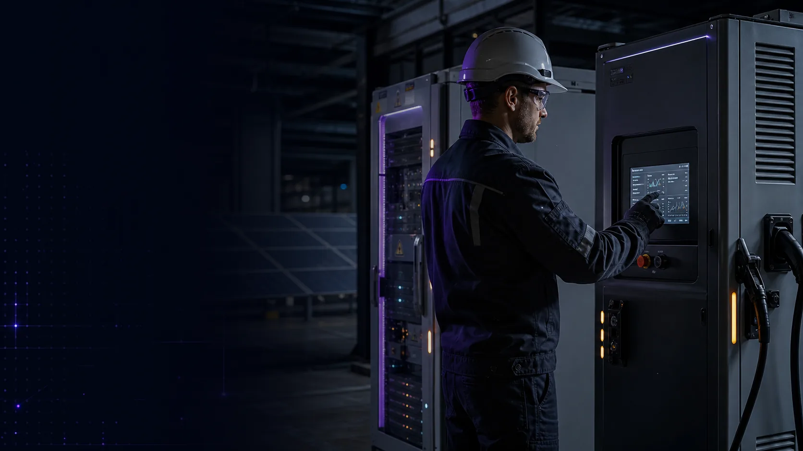

Biblioteca em expansão
Novos cursos adicionados continuamente ao seu plano.
Instituto Qualifica - Cambridge, Massachusetts
Uma assinatura prática para técnicos e engenheiros que trabalham com ativos críticos: cursos, materiais de campo, comunidade, encontros ao vivo e certificados em uma trilha técnica.

Benefícios
Novos cursos adicionados continuamente ao seu plano.
Material novo todo mês, sem custo extra.
Networking profissional dentro do Circle.
PDFs, checklists, fichas de campo e referências.
Avaliações práticas para consolidar suas habilidades.
Certificação, aulas ao vivo e atualizações para assinantes ativos.
Flagship Trilha
Sobre a Academy
A Qualifica Academy é a plataforma online do Instituto Qualifica, um centro de educação técnica conectado à infraestrutura de energia, automação industrial, operação e manutenção.
De Cambridge, Massachusetts, o Instituto Qualifica transforma experiência de campo em formação prática para técnicos e engenheiros.
Um caminho estruturado dos fundamentos elétricos ao carregamento de EV, BESS, diagnóstico, termografia e manutenção industrial.
Trilha de formação
Desenvolva competência passo a passo, dos fundamentos elétricos aos sistemas de armazenamento de energia e carregamento ultrarrápido.
Fundamentos elétricos, controls, instrumentation, and industrial electronics.
Motores, CLP, automação industrial e redes industriais.
Carregamento de EV, carregadores rápidos DC, BESS e sistemas modernos de potência.
Diagnóstico de falhas, thermography, megohmmeter testing, and field readings.
Rotinas de manutenção industrial, documentação e tomada de decisão em O&M.
Trilha completa: 15 módulos. Novos cursos são adicionados continuamente para assinantes ativos.
Feedbacks
Alunos reais, vídeos verticais e experiências do curso na própria voz deles.
Planos
Cancele quando quiser. Acesso instantâneo após o pagamento.
Para dar o primeiro passo.
US$19.90/mês
A escolha para quem quer evoluir com trilha e certificação.
US$39.90/mês
Para quem quer máximo acesso e networking.
US$59.90/mês
Pagamento seguro. Acesso instantâneo. Garantia de 7 dias. Sem fidelidade. Cancele quando quiser.
FAQ
Os detalhes práticos antes de entrar: acesso, garantia, certificados, atualizações e onde estudar.
Assim que seu pagamento for confirmado, você recebe acesso instantâneo à comunidade Circle do seu plano, com todos os cursos, materiais, sessões ao vivo e benefícios liberados.
You have a garantia de 7 dias. The subscription is monthly, with no lock-in and no penalty, so you can cancel whenever it stops making sense for you.
Sim. Os planos Prata e Ouro incluem certificação digital quando você conclui cursos e trilhas.
Constantemente. O conteúdo acompanha a evolução das tecnologias industriais e de energia, e novos cursos são adicionados automaticamente para assinantes ativos.
Você pode começar pelos fundamentos e avançar para tecnologias mais avançadas. A plataforma funciona em celular, tablet e desktop, incluindo o app Circle.
Chamada finalTrilha de Ativos CríticosGarantia de 7 dias
Uma assinatura prática para técnicos e engenheiros que trabalham com carregamento de EV, BESS, solar, automação, diagnóstico e manutenção industrial.